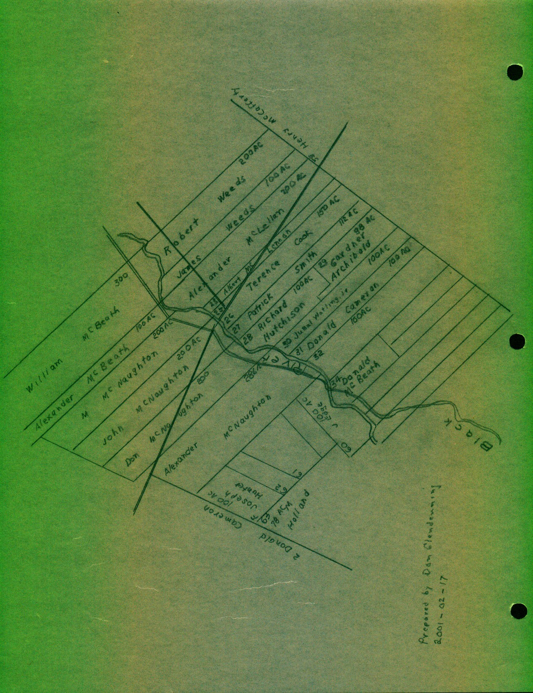

Land at the Meadows
My mother always referred to the place where she was born as The Meadows; the Post Office, however, would have been Black River. The map on the reverse side shows the location of the Watling property and some the properties immediately surrounding it. Starting at Route 11 on the south side of the river and moving west we find:
26 Terrence Cook 150 Ac. 1833-07-24
27 Patrick Smith 112 Ac 1838-12-21
28 Richard Hutchison 100 Ac 1849-06-04
29 Gardiner Archibald 98 Ac 1880-05-10
30 Jubal Watling, Jr 100 Ac 1881-04-20
31 Donald Cameron 100 Ac 1854-01-30
33 Unknown
34 Donald McBeath 1883-03-09
Property on the north side, immediately across from McBeath=s, was granted to J. Edge in 1842-05-09. and as we move east we find four McNaughtons -
Alexander, 286 Ac 1828-06-03
John 200 Ac 1822-07-24
Malcolm 200 Ac 1822-07-24
Don, was granted Lot No. 4 on Meadow Brook but I found conflicting information.
Observations (I=ll have others later):
- The grants were made much later and more gradually than at Little Branch. Presumably, settlement followed the same pattern.
- The south side of the river was Apoorer@ land and that, presumably, is why the settlement disappeared.
